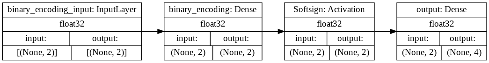
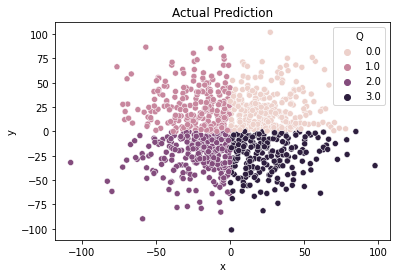
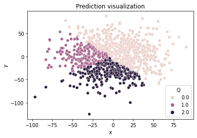

Neural Networks where they don’t belong
1. The advent of Neural Networks
At first, there was McCulloch-Pitts, then Hinton said, let there be backpropagation.
This comparison of Hinton to the Christian story of creation is well deserved. Until his paper on back-propagation[1] was published, people thought Artificial Neural Networks(ANNs) was a dead-end based on works from Minsky[2]. But even with this conceptual breakthrough, it was very difficult to usefully apply ANNs. Until…
The number of transistors that can be placed on an integrated circuit double every two years.
Moore’s law had finally grown enough for hardware to catch up to the requirements of training neural networks. The rest, as they say, is history. Whether anyone likes it or not, NNs are here to stay. They are all around us, in forms we may not even be aware of, in our cars[https://www.tesla.com/AI], in the games we play[https://deepmind.com/research/case-studies/alphago-the-story-so-far], in our financial institutes and maybe even in Starbucks? [https://stories.starbucks.com/stories/2020/how-starbucks-plans-to-use-technology-to-nurture-the-human-spirit/].
With all this context, I would like to try some experiments on ANNs, to try to gain an understanding of how these black boxes behave.
2. René Descartes and the Intel i7
Plane geometry is a subject that we are taught at a very young age, probably the first thing we are taught is the number line.

Figure 1: A number line [3]
Telling a positive number from a negative number is a pretty trivial task, don’t worry, I won’t be using a neural network for that. In 2 dimensions we have a plane and instead of positive and negative, we have four quadrants, each quadrant describing the sign of the two numbers describing a point.

Figure 2: 2-D Cartesian plane [4]
I will be running you through a neural network that classifies 2 numbers into these 4 quadrants of the plane. I hear you, you can write this function in less than a minute, I’ll show my implementations of them right here.
def model(x: float, y: float) -> int: """Return quadrant of point (x,y) in 2 D.""" a = x > 0 b = y > 0 if a & b: return 1 elif (~a) & b: return 2 elif a & (~b): return 4 return 3
Or even in C
// Return quadrant of point (x,y) in 2 D. int model(double x, double y) { bool a = x > 0; bool b = y > 0; if (a & b) return 1; else if ((!a) & b) return 2; else if (a & (!b)) return 4; return 3; }
This is a solved problem! Why are we trying to solve this?? This is even faster than any neural network! You might even use a decision tree or K nearest neighbors if you don’t have anything to do. But why NNs?
The answer is simple, this blog is a study of how we can study the behavior and architecture of Nets needed to solve this.
3. To code or not to code
For this exercise, I shall be using TensorFlow to write up the program. I shall be running the program on Google Colab’s generous free GPU. The notebook will be available on my GitHub.
Now there is an intuition we can use here:
- The quadrant doesn’t depend on the value, just the sign of the values
An obvious way of abusing this intuition is to “augment” the data to just be binary(\Re2⇒ {0,1}2) to give a hint to the model, but this would not be fair. But the binary intuition seems right, all the information can be represented in 2 bits. So maybe there should be 2 units in the hidden layer.
What about the activation function? Well, maybe we can use this to somehow indicate a sign? Enter the soft-sign activation.

Figure 3: Soft-sign activation vs Tanh activation [5]
soft-sign can be expressed as:
softsign\left(x\right) = \left(\frac{x}{|x|+1}\right)
Now, all we have left is to train the model we’ll have to tune the optimizer and learning rate, but this is an exercise left to the reader, the writer has spent too much time on it and would like to share their misery. This is what the model looks like:

Figure 4: Model architecture
4. Data, oh data
It is the struggle itself that is most important. We must strive to be more than we are. It does not matter that we will never reach our ultimate goal. The effort yields its own rewards.
– Lt. Cmdr. Data, Star Trek: The Next Generation, “The Offspring”
This is a really easy thing, for our experiment we’re using 2 dimensional normal data with mean 0 and variance 30 and a simple 80-10-10 train-val-test split. But an interesting study here would be to use different distributions, skewed, uniform, Poisson, etc., and try to make the model learn. Maybe even combinations of these distributions and see the performance during training.

Figure 5: Visualization of data-set.
5. Results
If you decide to go on a hyper-parameter search journey, you will notice the following a lot.
- The model gets stuck on 25%
- The model gets stuck on 50%
- The model gets stuck on 75%
Now, there’s a very obvious reason why this is happening, here is an interesting visualization:

Figure 6: Visualization of a model which is 50% accurate
That looks very weird but extremely interesting, but if you see the weights of the matrix, they approximately look like:
Cool right?
Now let’s get to business, what do we see when we get 100%(approx) accuracy? The plot is going to look something like the data distribution itself, but the learned weights are very interesting. The following are some weights of the 2 linear units that are optimal, approximated.
What we can see is that these weights are very simply matrix transformations like identity((x,y)->(x,y)) and negate flip((x,y)->(-y,x))! The activation function squishes the numbers to be 1 or -1, and the last layer just has to learn the right combination which is a trivial linear equation and has infinite solutions! Notice that the determinant of all these matrices has been 1.
6. Concluding remarks
This has been a study of neural networks, applied to an extraordinarily trivial task, and we have been able to observe some very interesting observations. This was inspired by an experiment in Tom Mitchell’s seminal textbook, Machine Learning[6], in section 4.6.4, Hidden layer representation.
7. References
- Rumelhart, D. E., Hinton, G. E., and Williams, R. J. (1986) Learning representations by back-propagating errors. Nature, 323, 533–536.
- Minsky, Marvin; Papert, Seymour (1969). Perceptrons: An Introduction to Computational Geometry. MIT Press. ISBN 978-0-262-63022-1.
- By Hakunamenta - Own work, CC0, https://commons.wikimedia.org/w/index.php?curid=20206520
- By K. Bolino - Made by K. Bolino (Kbolino), based upon earlier versions., Public Domain, https://commons.wikimedia.org/w/index.php?curid=869195
- https://sefiks.com/2017/11/10/softsign-as-a-neural-networks-activation-function/
- Mitchell, T. M. (1997). Machine Learning. New York: McGraw-Hill. ISBN: 978-0-07-042807-2
This web page is hosted by GitHub, much thanks to them! Please support open source developers if you can!
When is this website from? 2000 ? Web 1.0 much?